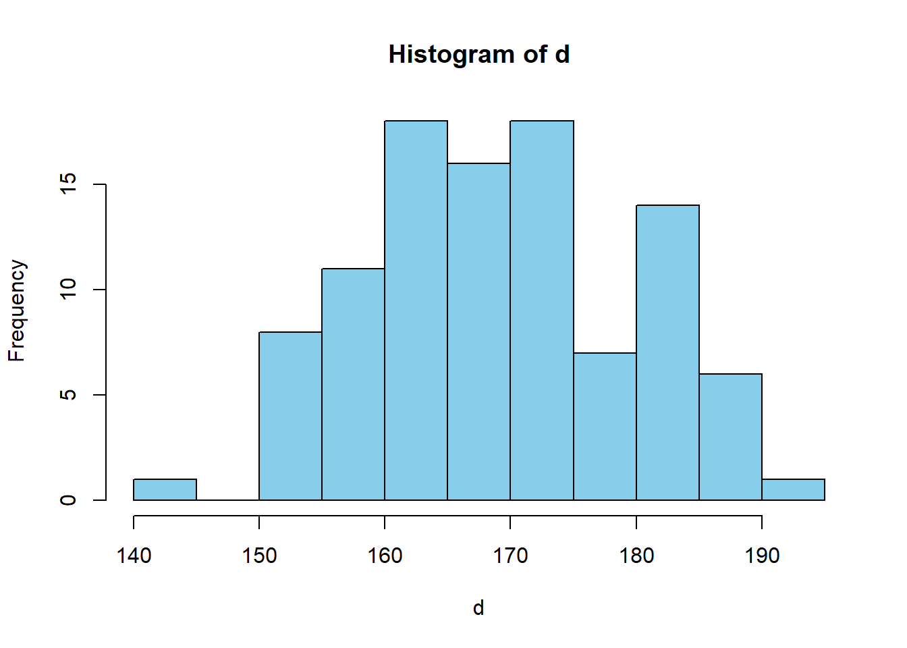
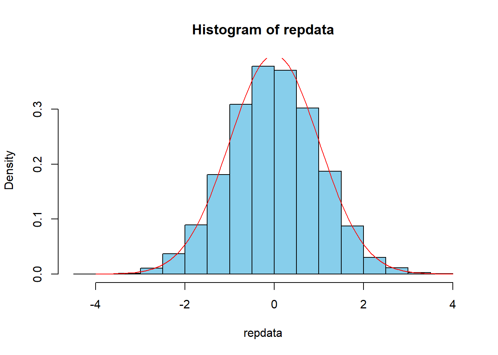
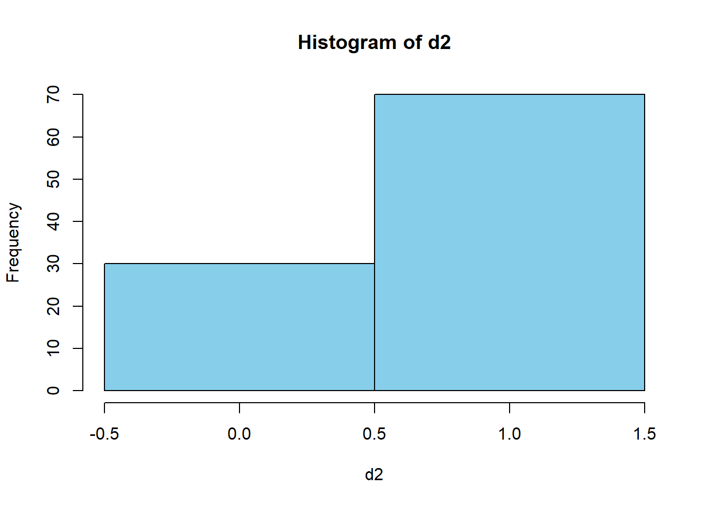

第11章 仮説検定(2): 母平均・母比率の検定
ここでは，母平均・母比率の検定を自力で行い，Rの組み込み関数と結果を比較する．
11.1 母平均の検定
平均170分散100の母集団正規分布\(N(170,100)\)からの\(n=100\)のサンプリングデータが得られたとする．

## [1] 169.46672 10.59732母分散未知として，帰無仮説・対立仮説 \[H_0: \mu = \mu_0,\ \ H_1: \mu \neq \mu_0\] として両側仮説検定を実施する．
帰無仮説のもとでの\(t\)値を算出する関数を定義する． \[t=\frac{\bar{X}-\mu_0}{S/\sqrt{n}}\] \(\mu_0=165\)としたときの\(t\)値．
## [1] 4.214954標準正規分布を仮定したときの\(p\)値．
## [1] 2.498288e-05\(t\)分布\(t(n-1)\)を仮定したときの\(p\)値．
## [1] 5.525124e-05t.test関数を使って同じことをする．
##
## One Sample t-test
##
## data: d
## t = 4.215, df = 99, p-value = 5.525e-05
## alternative hypothesis: true mean is not equal to 165
## 95 percent confidence interval:
## 167.3640 171.5695
## sample estimates:
## mean of x
## 169.4667\(t\)値ならびに\(t\)分布を仮定したときの\(p\)値が一致していることが確認できる．
帰無仮説\(H_0: \mu=165\)のもとでの\(t\)値の分布を確認する．
repdata<-replicate(10000,t(rnorm(100,165,10),165))
hist(repdata,col="skyblue", prob=TRUE)
curve(dnorm(x,0,1),-4,4,col="red",add=TRUE)
帰無仮説\(H_0: \mu=165\)のもとで\(t\)値として4.2149543のような値が得られることはほとんどない．
## [1] 011.2 母比率の検定
ベルヌーイ分布\(Bi(1,0.6)\)からの\(n=100\)のサンプリングデータが得られたとする．

帰無仮説・対立仮説 \[H_0: \mu = \mu_0,\ \ H_1: \mu \neq \mu_0\] のもとでの\(z\)値を算出する関数を定義する． \[z=\frac{\hat{p}-p_0}{\sqrt{p_0(1-p_0)/n}}\] \(p_0=0.5\)としたときの\(z\)値を算出する．
## [1] 4標準正規分布を仮定したときの\(p\)値．
## [1] 6.334248e-05prop.test関数を使って検定．ただし，prop.testでは，以下のzstat^2がカイ二乗分布\(\chi^2(1)\)に従うことを利用して検定している．
##
## 1-sample proportions test without continuity correction
##
## data: sum(d2) out of length(d2), null probability 0.5
## X-squared = 16, df = 1, p-value = 6.334e-05
## alternative hypothesis: true p is not equal to 0.5
## 95 percent confidence interval:
## 0.6041515 0.7810511
## sample estimates:
## p
## 0.7## [1] 16## [1] 6.334248e-05